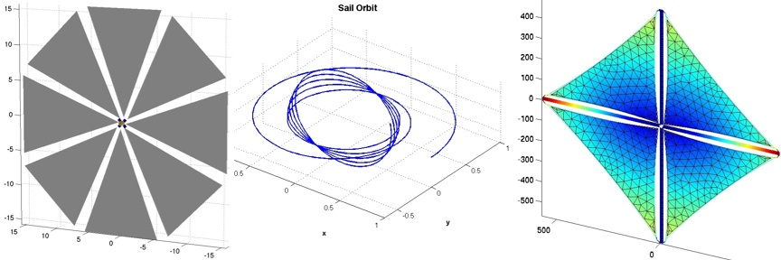

| What's Included |  |
The Solar Sail Module is an add-on module to the Spacecraft Control Toolbox that adds extra functionality.
PSS has been developing sail analysis software since 2004 for both NASA's In-Space Propulsion program and the SBIR program. Our high-fidelity disturbance model enables users to simulate complex sail shapes without resorting to analytical approximations. You can study the nonlinear effects of different sail material properties and propellantless actuation schemes. The combination of these special sail CAD and dynamics models with control design tools from the core toolbox provide a complete sail attitude and orbit control analysis solution.

Features
- Propellantless attitude control with vanes, moving mass, and rotating boom
- Simulations of integrated guidance and attitude control
- Sail disturbance function with combined optical and thermal force model
- Design examples such as Cosmos-1, striped square sail, billowed circular sail
- Mission examples such as Solar Polar Imager, heliopause probe, and geocentric kite
- Deployment dynamics with time-varying inertia
- Locally optimal guidance laws for geocentric and heliocentric orbits
- Numerical trajectory optimization using simplex, genetic algorithms, and simulated annealing
For more information, visit the product webpage at http://psatellite.com/sct/solar_sail.php